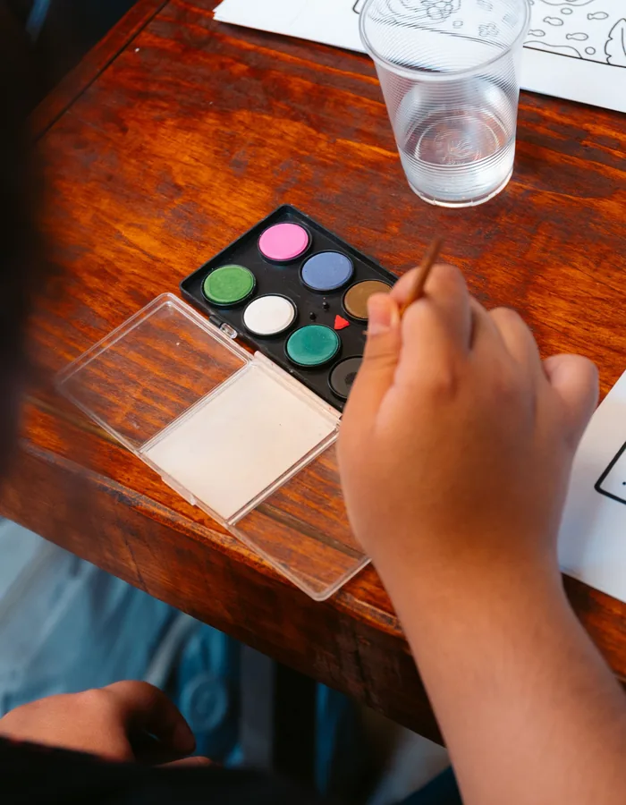

Ideas para crear, decorar y transformar materiales sencillos en proyectos para disfrutar juntos.
Las manualidades son una forma sencilla de pasar un rato en casa creando algo juntos. No hace falta preparar grandes proyectos ni tener muchos materiales: con papel, cartón, pintura y algunos objetos cotidianos pueden surgir propuestas muy diferentes. Aquí reunimos ideas organizadas por tipo de manualidad y edad orientativa para que sea fácil encontrar una propuesta que encaje con cada momento.
Diez formas de crear en casa, organizadas por tipo de actividad y edad orientativa.
Las edades son orientativas. Cada niño puede disfrutar de una actividad de forma diferente y algunas propuestas pueden requerir más o menos ayuda según sus características y la dificultad de cada actividad. Todas las actividades deben realizarse siempre bajo la supervisión de un adulto responsable, utilizando materiales adecuados para la edad y siguiendo las indicaciones de seguridad correspondientes.